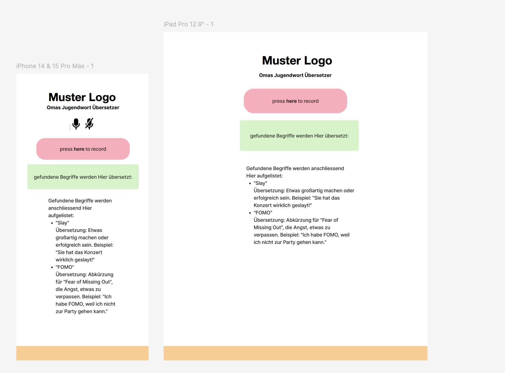
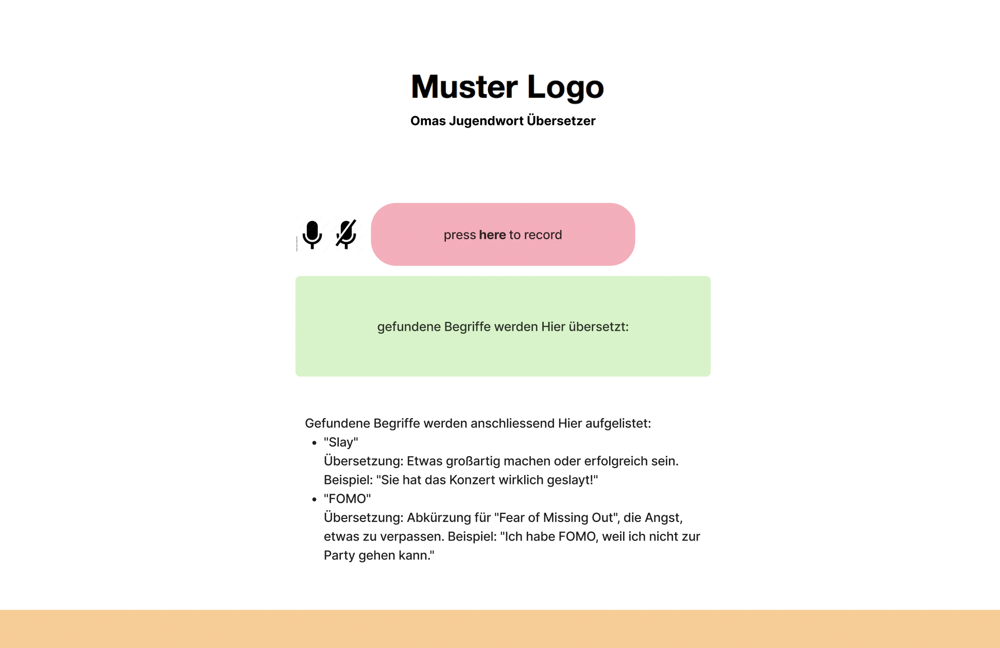

Topic
In the first project of the semester, we had the opportunity to gain insight into the basic concepts of training AI by getting to know “Google Teachable Machine”. Google Teachable Machine is a web-based tool that allows you to create machine learning models without needing advanced programming or knowledge in that area.
The collection of data, the creation of a suitable setting and the evaluation process created an improved understanding of how artificial intelligence works. The user-friendliness of the tool and the ability to quickly obtain outputs make it particularly beginner-friendly. It also made very experimental projects possible because it allows for very different inputs such as sound or images. By working with Google Teachable Machine, the opportunities but also limitations of AI became clearer. The tool enables rapid prototyping and the opportunity to develop a better understanding of AI. Our task was to create a project in which the user provides an input and the AI generates an output based on the collected data. So it was initially crucial to find a topic and develop a suitable input/output concept.
Idea
What I found interesting was working with sound recognition. I developed the idea of identifying and translating language or words.
Thus, I developed a tool that was meant to identify "youth slang" and then translate it. My primary objective was to bridge the communication gap between different generations by developing a tool that translates modern slang into more widely understood language. If developed further, this tool could become particularly useful for many people, such as educators, parents, and anyone interested in staying updated with evolving linguistic trends. In order to limit the scope of the project, the translator was specifically designed for my grandmother. I thus, particularly used words that I frequently use in my own everyday language.
Process
I started by creating an overview of the words and a basic wireframe for the website on Figma. What followed was the collection of a diverse set of audio clips containing different slang terms. It was an interesting experience to sit in a room full of people and repeating the words “digger” “safe” or “cringe” again, and again, and again, and again and again. The usage of slightly varying pronunciation and emphasis proved itself to be useful. The creation of a specific setting can help the AI in recognizing the data. It can be confusing for the AI if you keep changing the settings in which you record the audio clips. Because of that, I chose our classroom as a setting. Using Google Teachable Machine, the collected audio clips were uploaded and labeled with their respective translations. The platform’s user-friendly interface made it easy to create and train a sound recognition model. Training the AI to properly detect the different words turned out to be quite a challenging.
The AI kept recognizing the wrong word, even though there were now more than 80 audio samples collected. It did mostly recognize the correct word, however after that it would just randomly detect words. As AI is mostly a black box, it can often be challenging to not really have a direct solution to the problem. Even after hours of training, the problem remained. So instead, my focus was more on the interface of the website. I integrated the final model into a user-friendly application, where the user would simply have to press the "start recording" button, and the process of the translation would be started. Users can now input slang phrases via a microphone, and the app will instantly provide a translation. Still, as of now, it had troubles recognizing the phrase. The setting (background noise etc.) could partly be responsible for this. Likewise, an even better training could, of course, lead to better results. Nevertheless, I am glad that the words are often recognized at first.
Takeaways
In times when AI and the use of AI are playing an increasingly important role in what seems like all areas of life, I believe deepening one's understanding of how an AI works and how it can be trained can help a lot in optimizing your own use of it. This knowledge not only empowers individuals to utilize AI more effectively, but also fosters a critical perspective on its capabilities and limitations.
Exploring AI through practical tools like Google Teachable Machine allowed me to experiment hands-on with training models, providing a tangible connection between theoretical concepts and real-world applications. It was also interesting to find a field that suited my own interests and could also potentially be of use to others.
Even though it was a bit frustrating at times to not get correct results, I see a lot of potential in the process of understanding what it means to train and work with AI, rather than the focus being on the perfect final result. I believe that, a learning process like this, is crucial for developing a robust comprehension of AI.
Moreover, grasping how AI is trained and worked with can demystify the technology, making it more accessible and less intimidating. This, in turn, can inspire more people to explore and innovate with AI, which could lead to more diverse and inclusive advancements in the field.

wireframe idea for the website

wireframe idea for the website
wireframe idea for the website